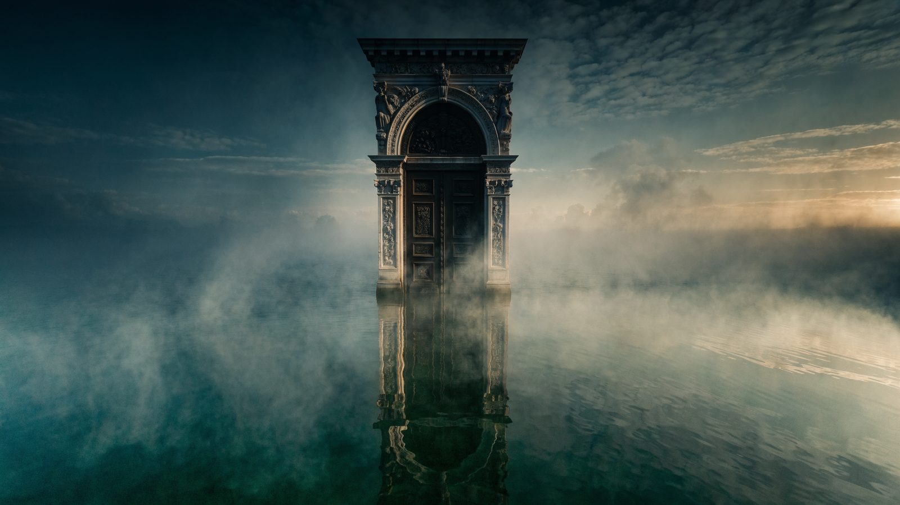
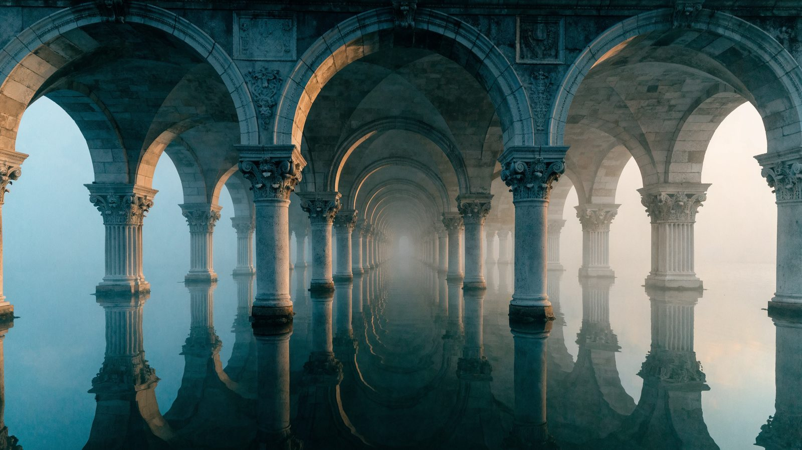

I am writing this from a room in Ca' da Mosto, one of the oldest merchant houses on the Grand Canal in Venice. Across the water sits the Fabbriche Nuove, the long, low administrative range that Jacopo Sansovino raised beside the Rialto market. It is not a palace. There is no grand princely doorway announcing I rule this place. Instead there is only rhythm, bay, bay, bay, bay, office after office, magistrate after magistrate, shop after shop. The individual disappears into the institution.
That rhythm is not decoration. Behind those identical bays sat the working organs of a state: commercial courts, customs officials, the magistrates who policed weights and grain and salt and shipping. Sansovino's building did not house a prince. It housed a bureaucracy, and by the time he raised it in the sixteenth century that bureaucracy was already three centuries old. The Renaissance facade was a monument to an administrative machine that had grown up in the Middle Ages.
Why so early? Because Venice had almost no land, and a city that lives by the sea cannot be run like a kingdom that lives by the plough. A single voyage to Alexandria might bind together twenty investors, borrowed money, a hired captain, foreign customs regimes, and the standing risk of shipwreck and piracy, with months of waiting before any of it resolved. You cannot run that on a handshake. It takes records, contracts, notaries, courts, standard procedures, auditors. Maritime commerce is unforgiving of bad administration, and Venice became very good at turning each recurring problem into a permanent institution.
The rule-writers were not an outside bureaucracy imposed on the merchants. They were the merchants, writing the rules for a game in which their own fortunes were at stake. Their private wealth rode on the quality of their public institutions. That alignment is rare, and it changed how the rules got written. Venice learned early what most states pay in blood to learn: a complex society runs on good plumbing, not on a brilliant ruler, on its courts, its records, its offices, its checks. The institution outlasts the men who staff it.
This matters now because we are building a new kind of powerful actor, and reaching, by default, for the design Venice spent centuries learning to distrust. We keep asking one question about artificial intelligence: how smart can we make the model? It is the wrong question, or at least the question a medieval prince would have asked, and Venice worked out why seven hundred years ago.
The Doge Is the Wrong Architecture
The dream is everywhere right now: one enormous agent. You hand it the whole company and say, read everything, decide everything, execute everything. Give it the credentials, the tools, the context, the keys. Then let its intelligence do the rest.
This is the absolute-monarch architecture: fast, powerful, and catastrophic when it fails. One hallucination, one poisoned context, one stolen credential, and the mistake does not stay contained. It becomes policy, and spreads through everything the monarch touches.
Venice learned this the hard way. Its early doges behaved like hereditary princes, and several tried to turn the Republic into a family dynasty. So, over generations, the aristocracy hollowed the office out. By the mature Republic the Doge was magnificent and nearly powerless. He could not open the state's mail in private, conduct foreign policy alone, or treat the treasury as his purse. Councillors surrounded him. Documents were witnessed. Even electing him ran through a baroque machine of lot and ballot, alternating chance and choice until forty-one final electors emerged. The whole contraption existed to stop any one faction fixing the result.
Put simply, Venice looked at its most capable, most prestigious actor and decided: do not give him root access.
Distrust built into the design on purpose, aimed at no one in particular, is the instinct we have not yet learned, even in an industry worth trillions.

No Ministry of Everything
You can watch that instinct build the city. Complicated shipping produced maritime magistrates; strategic grain, grain officials; unaudited books, auditors; plague, a board of health, and quarantine with it. There was no Ministry of Everything, only a widening set of narrow offices, each with its own mandate, tools, permissions, and test of success.
Any engineer building agentic systems will recognise the shape: an orchestrator handing work to narrower agents, a research agent, a procurement agent, a compliance agent, a verifier, each scoped, each least-privileged. The finance magistrate has no reason to send mail; the research agent has no business moving money. A Venetian would grasp the principle before you finished the sentence.

Rialto Was an API Layer
Cross the water to the market itself, and the analogy sharpens.
Medieval trade was chaos: many currencies, languages, legal systems, measures, and jurisdictions colliding at once. Rialto did not abolish that complexity; it hid it behind standard interfaces. Weights and measures were schemas; notarial contracts, structured messages; commercial courts, exception handling; customs officials, the gateway; merchant registries, identity and authentication; the public banks, the transaction layer; the archives, persistent storage. Each magistracy was a service, and Rialto itself the platform.
The genius was never eliminating complexity, which is impossible. It was hiding complexity behind clean interfaces, so a whole city could trade at a scale no single person could hold in their head.
Then there is the archive, and the Venetian habit of writing everything down. Officials rotated constantly; a man held an office for months and moved on. Normally that wrecks institutional competence, since every newcomer relearns the world. Venice fixed it by refusing to let knowledge live inside people. Decisions, precedents, ledgers, dispatches, all of it piled up into a memory that outlived any officeholder.
Here the parallel is exact. A large language model is ephemeral. It runs brilliantly for thirty seconds, then vanishes, taking everything with it. The officeholder was ephemeral compute; the office, the persistent identity; the archive, the long-term memory. You do not want the state of an enterprise sitting inside a context window. Venice would put it in the archive. Who is this user, what have we decided, what did we try last time, what have we promised: a king dies and takes the answers with him, a bureaucracy writes them down. That is not a footnote. It is the whole game.
The genius was never eliminating complexity. It was hiding it behind clean interfaces, so a whole city could trade at a scale no single person could hold in their head.
Governance Is a Form of Intelligence
A comfortable idea is going around: that enough intelligence will dissolve the problem of coordination, that a smart enough system will not need governing. Venice suggests the opposite.
As the power of individual actors rises, governance matters more, not less. Venetian merchants were formidable autonomous agents. They crossed continents, borrowed fortunes, commanded ships, bargained with sultans. Because they were so powerful, the Republic wrapped them in protocol. The mature Venetian state was a multi-agent system: powerful, partly self-interested agents under shared rules and a common, durable memory.
The Republic never pretended its patricians shared one goal. The Corner family wanted what the Contarini did not. Merchants competed, factions formed, everyone chased money and rank. Its constitution was a centuries-long attempt to make selfish local incentives add up to a tolerable public result. Francis Fukuyama has spent a career arguing that the wealth of nations turns less on resources than on state capacity, the power to build institutions that constrain the powerful. Venice is that thesis in stone and water. And what is it, in today's language, but the alignment problem? You need not make every agent want the same thing, so long as you shape the environment to catch bad behaviour and reward cooperation. That is mechanism design, five hundred years before the term.
Watch how the Republic handled a suspected fraud. No single magistrate was detective, prosecutor, judge, executioner, and accountant at once. One body gathered the evidence, another weighed it, another authorised the penalty, another recorded what happened. Set that against the shape we keep building: the agent thinks, decides, executes, and then reports that the execution succeeded. The agent that tells you it wired fifty thousand euros should not be the only authority confirming the money moved. Venice called this institutional distrust. We call it least privilege, separation of duties, independent verification. Same idea, older accent.
The Venetians even grasped adversarial evaluation. They built overlapping jurisdictions on purpose, several bodies able to notice the same wrongdoing. To an efficiency consultant that looks like waste. Why pay for redundancy? Because if one office is captured, another may catch it, and everyone can be audited after the fact. Instead of agent, then action, you get proposal, challenge, authorisation, execution, audit. It costs more, it runs slower, and now and then it is absurd. It also cuts the tail risk of the one catastrophic mistake, which is exactly the trade we are now, reluctantly, learning to make with agents that can reach into the real world.
Who Watches the Watcher?
And then there is the Council of Ten, the part that should unsettle us.
Venice built a small, secretive body with sweeping powers to protect the state: to watch the other magistracies, detect anomalies, suspend authority, investigate the compromised, escalate the dangerous. In our terms, a privileged supervisory agent. Useful, obviously useful. You want something watching the fleet.
But now you have an agent with more power than the agents it polices, and Venice walked straight into the oldest question in political theory. Who watches the watcher? The Ten had to be fenced with procedure and fought over for centuries. It is an AI-governance thought experiment written seven hundred years early, and we have not improved on the answer. We have only reached the same question with faster hardware.

The View From the Canal
So I sit here and read the far bank like a systems diagram.
Ca' da Mosto, where I am staying, is an autonomous economic agent. The Grand Canal is the network. Rialto is the transaction platform. The Fabbriche Nuove across the water are the governance and administrative services. The archives are persistent state, the magistracies specialised agents, the councils orchestration and authorisation, the Doge an executive interface on a short leash of permissions. Over all of it, the laws and constitution of the Republic, runs the protocol.
That is why Venice lasted the better part of a thousand years, through wars, plagues, financial panics, incompetent doges, and the ordinary failures of ordinary men. The system did not need every node to be brilliant. The architecture carried an intelligence no single participant held.
We keep asking how intelligent we can make the agent. Venice asks the better question: how intelligent can we make the system the agents run inside? The next leap may look less like an all-powerful artificial Doge and more like an artificial Venetian Republic, many capable agents on narrow mandates, explicit permissions, durable memory, standard interfaces, independent verification, adversarial checks, escalation paths, and enough friction that no single hallucination can harden into state policy.
Venice never grew rich because Venetians were good at trading. It grew rich because it built a machine that let a whole city trade at a scale no one person could manage. That is the modern thing you feel at the Rialto: an operating system for collective action, run for centuries on human hardware.
We are about to build the same thing out of silicon. The question is whether we remember what it took to make it hold. Governance is not the tax we pay on intelligence.
Governance is not the tax we pay on intelligence. Governance is a form of intelligence. And it is the form we have been least willing to build.